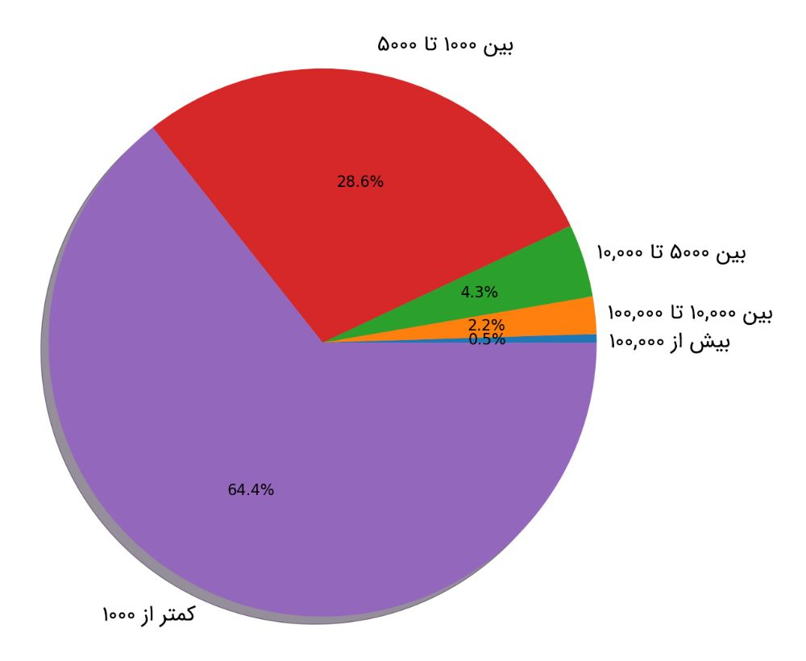
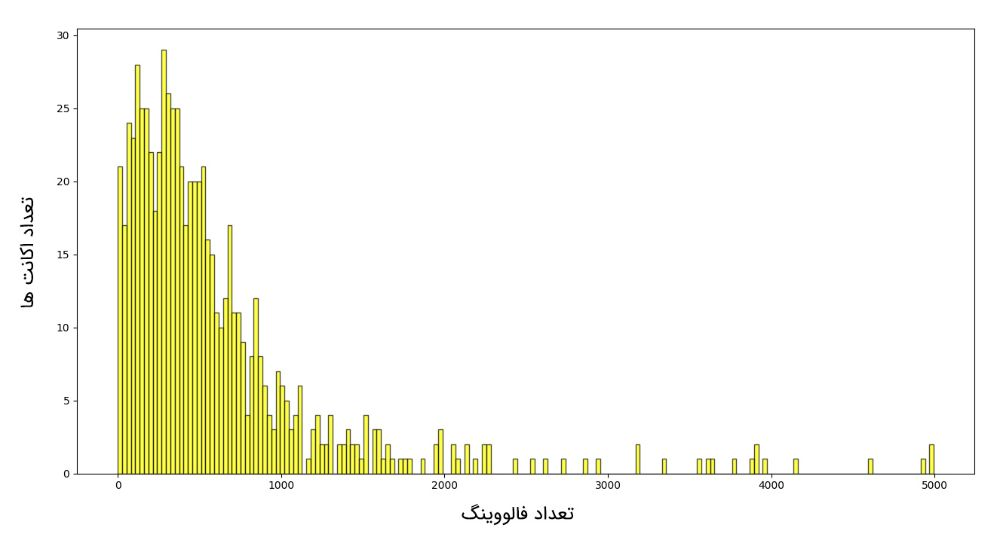
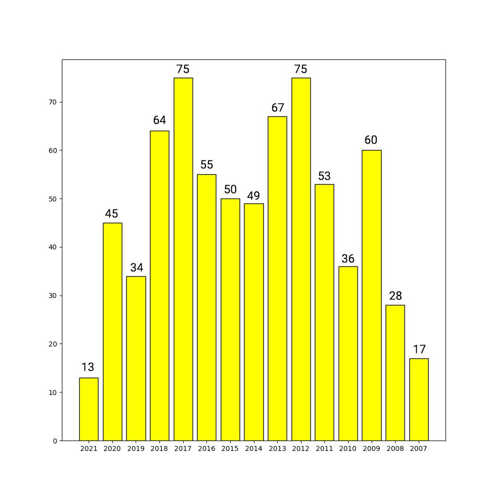
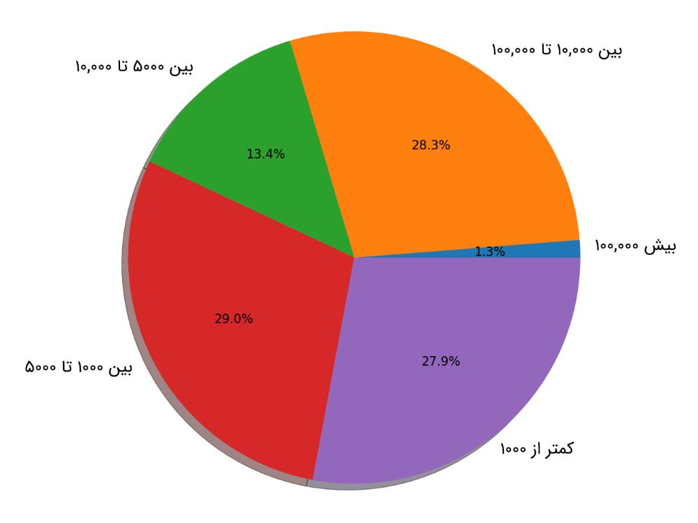
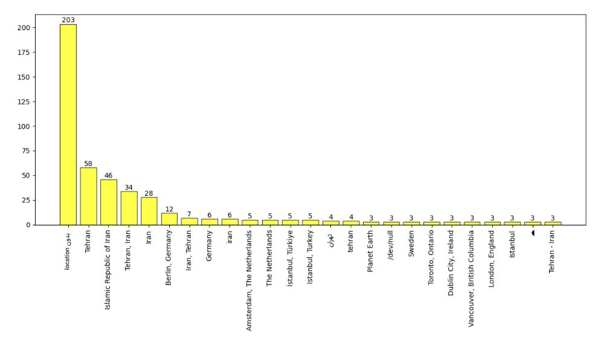

توصیه میکنم ابتدا بخش اول رو بخونید و بعد بیاید سراغ بخش دوم. لینک بخش اول :
تعداد فالوور های اعضای این لیست چگونه است؟

۱۰ نفر اول که بیشترین تعداد فالوور را دارند :
تعداد فالووینگ های اعضای این لیست چگونه است؟

همانطور که در تصویر بالا نیز به وضوح مشاهده میشود، عمده افراد این لیست (85 درصد) کمتر از ۱۰۰۰ نفر را فالو کردهاند.اعضای این لیست چه سالی به توییتر پیوستند؟

۱۷ نفری که در سال ۲۰۰۷ به توییتر پیوستند :
لیست کامل را در gist زیر قرار دادم :
اعضای این لیست تاکنون چه تعداد توییت نوشتهاند؟

همانطور که در نمودار بالا نیز مشاهده میشود، تقریبا نیمی (56.9 درصد) افراد این لیست کمتر از ۵۰۰۰ توییت و نیمی دیگر (43.1 درصد) بیش از ۵۰۰۰ توییت نوشتهاند. تعداد کل توییت هایی که اعضای این لیست تاکنون نوشتهاند 8,134,518 عدد است.۱۰ نفر اول که بیشترین تعداد توییت را نوشتهاند :
لیست کامل رو در gist زیر قرار دادم :
اعضای این لیست چه لوکیشنی را در پروفایل خود قرار دادهاند؟

لیست کامل رو در gist زیر قرار دادم :
اگر ابر کلمات description یا همان bio پروفایل اعضای لیست را رسم کنیم نتیجه به صورت زیر میشود :
پر تکرار ترین اسم در این لیست چیست؟
این اسم ها رو چه جوری استخراج کردم؟ خیلی ساده! اسم هایی که از اول فارسی بودند رو که کاری نداریم. اسم های انگلیسی رو با استفاده از سایت زیر (فینگلیش به فارسی) تبدیل کردم :
لیست کامل رو در gist زیر قرار دادم :
nb.neighbours()
| title | date | |
|---|---|---|
| prev | مروری بر اِکس در توییتر فارسی | ۱۴۰۰/۰۸ |
| next | دیجیکالا در توییتر چه میکند؟! | ۱۴۰۰/۰۹ |